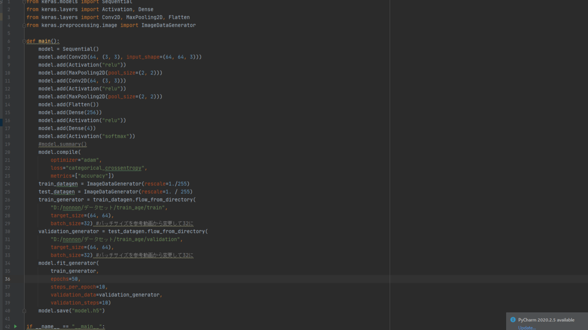
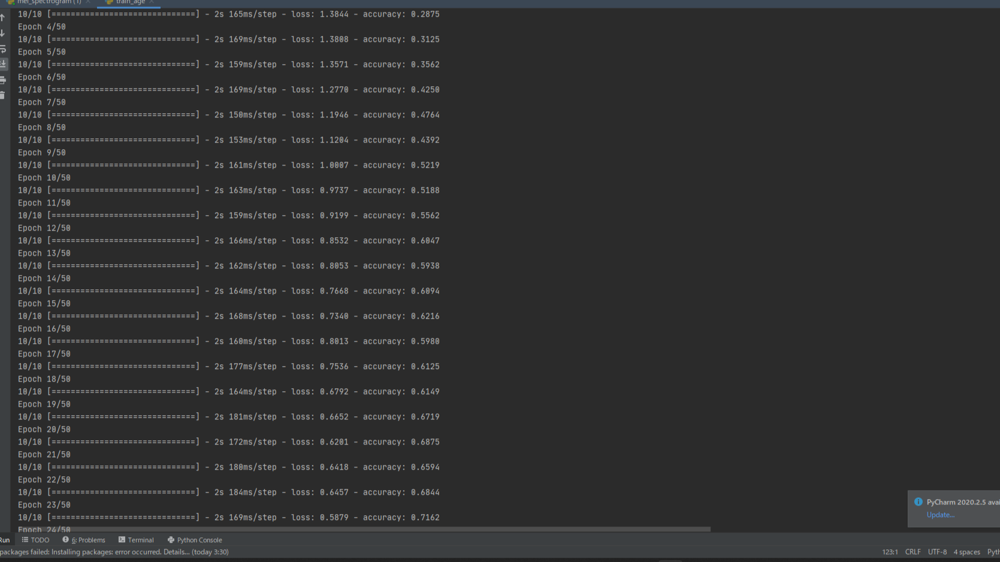
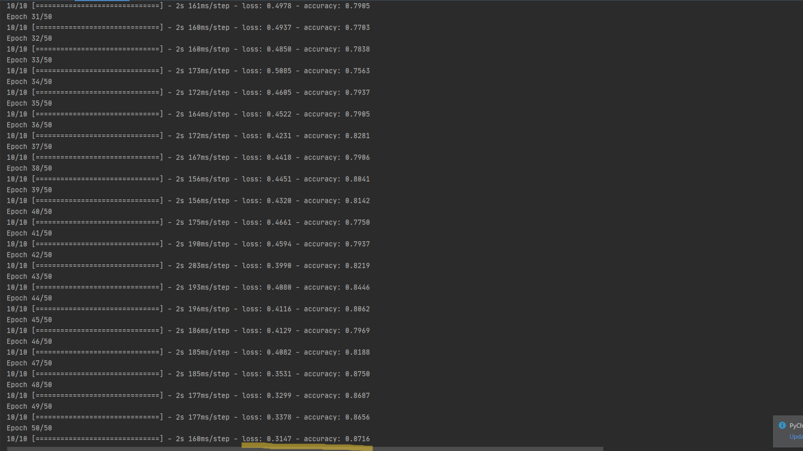

【Keras】CNNによる年代推定(2022/01/21)
今回は、Kerasを用いてCNNによる年代推定の分類器を作成する。
●データセットと学習モデル作成ツールの変更
・データセット
CommonVoiceの日本語データセット
…年齢の偏りとラベルの欠損が多く扱いづらい。
CommonVoiceの英語データセット
…データが膨大すぎて扱いきれない。メル周波数フーリエ変換が完了するまで7日要する【進行中】。
JVSコーパスのnonpara_3000の中の1000データ ←イマココ
…印象推定の学習用に用意していたものに、手作業で「male_old」、「female_old」、「male_young」、「female_young」の四つ分類ラベルを施した。
・学習モデル作成ツール
SonyのNeural Network Console(NNC)を利用する方針だったが、フォルダの参照の際にどうしてもアクセス権限に引っかかるので今回は利用を断念。
pythonのライブラリKerasを用いて、シンプルなCNNモデルを作成することにした。
●主に参考にしている動画
・人工知能で毒キノコを判別しよう - #4 画像を入力してみる
こちらのシリーズの#4～#6を参考に分類器を実装します。
●コード全文

●学習結果(二枚)


●参考にしたサイト
・https://qiita.com/Nabetani/items/bf0f17924e11f8e87b53
・https://data-viz-lab.com/overfitting
今回の投稿はここまで。ありがとうございました。